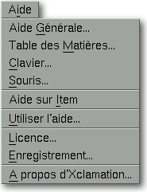

<!-- Documentation Xclamation (c)1994-2000 AXENE contact axene@axene.org>
<html>
<head>
<title>Menu Aide</title>
</head>

<body BGCOLOR="#FFFFFF" BACKGROUND="Images/back.gif" TEXT="#000000">
<p ALIGN="right">


<p>
<br>
<br>
Le menu déroulant Aide propose des accès rapides à des parties
de la documentation.
<br>
<br>
<hr>
<br>
<center>

<br>
<i><small>
Photo d'écran&nbsp;: Menu déroulant Aide
</i></small>
</center><p>
<br>
<hr>
<br>
<p>
<h3>Le menu Aide comporte les entrées suivantes&nbsp;:</h3>
<ul>
  <li><a NAME="overview_menu_entry">l'entrée <i>&quot;Aide
     Générale...&quot;</i> permet d'obtenir des 
     <a HREF="Overview.html">informations générales</a> 
     sur la manière d'utiliser Xclamation.
     </a><p>
  <li><a NAME="table_of_contents_menu_entry">l'entrée <i>&quot;Table
     des Matières...&quot;</i> donne accès à
     la <a HREF="index.html">table des matières</a> de l'aide.
     </a><p>
  <li><a NAME="keyboard_menu_entry">l'entrée <i>&quot;Clavier...&quot;</i>
     permet d'obtenir de l'aide sur l'usage général
     du clavier, notamment les <a HREF="Keyboard.html#shortcuts">raccourcis claviers</a> 
     et la façon
     d'entrer les <a HREF="Keyboard.html#special_car">caractères spéciaux</a>.
     </a><p>
  <li><a NAME="mouse_menu_entry">l'entrée <i>&quot;Souris...&quot;</i>
     permet d'obtenir de l'aide sur 
     l'<a HREF="Mouse.html">usage général
     de la souris</a>, notamment l'utilité des boutons.
     </a><p>
  <li><a NAME="help_on_item_menu_entry">l'entrée <i>&quot;Aide
     sur Item&quot;</i> permet d'obtenir de l'aide en cliquant sur
     une certaine partie de l'interface. Par exemple, on peut savoir
     à quoi sert un bouton icône en choisissant cette
     entrée puis en cliquant sur l'icône en question.
     </a><p>
  <li><a NAME="using_help_menu_entry">l'entrée <i>&quot;Utiliser
     l'aide...&quot;</i> permet d'obtenir des informations sur les
     différentes manières d'obtenir de l'<a HREF="Help_Usage.html">aide</a>.
     </a><p>
  <li><a NAME="licence_menu_entry">l'entrée <i>&quot;Licence...&quot;</i>
     permet d'ouvrir une boîte dans laquelle il est indiqué
     les conditions de la <a HREF="License.html">licence</a> actuelle d'Xclamation.
     </a><p>
  <li><a NAME="registration_menu_entry">l'entrée <i>&quot;Listes de diffusion...&quot;</i>
     permet d'ouvrir une boîte à partir de laquelle il
     est possible d'envoyer un e-mail à Axene. Cet e-mail permet de
     s'enregistrer auprès d'Axene pour accéder à plusieurs
     listes de diffusion Axene.
     </a><p>
  <li><a NAME="about_xclamation_menu_entry">l'entrée <i>&quot;A
     propos d'Xclamation...&quot;</i> permet d'ouvrir une boîte
     indiquant des informations sur la version d'Xclamation utilisée
     et les adresses pour <a HREF="About.html">contacter Axene</a>.
     </a><p>
</ul>
<br>
<hr>
<p ALIGN="right">
<p>
</body>
</html>


